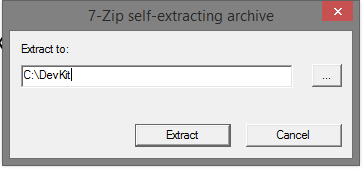
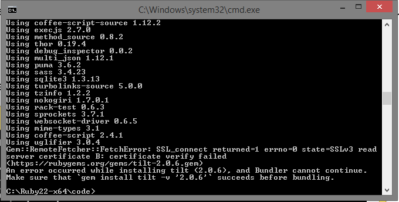

Last modified: Thu Aug 16 2018 22:49:02 GMT+0800 (Malay Peninsula Standard Time)
Chapter 1. Windows Installation Guide for Ruby 2.2.x
This chapter will discuss Ruby 2.2.3 installation. If you are planning to use the latest Ruby version, Ruby 2.4.1, as of August 2017, please refer to Chapter 4. However, you may have compatibility issues due to some of the Gems that you may want to use is not updated and tested for Ruby 2.4.
The following guide in this chapter was tested on machines running
- Windows 7 Professional 64-bit
- Windows 8.1 Professional 64-bit
- Windows 10 Professional 64-bit
It should work on any machine that runs on modern Windows Operating System. You may follow this video tutorial. However, you may receive SSL_connect error during or after installation. If you received SSL_connect” error after creating your Website or while trying to start your server, please refer to Chapter 1.7. If you received SSL Certificate Error while installing Rails or pulling updates from RubyGems.org, please read Chapter 1.5.
1.1 Obtaining Required Files
If you already have a copy of Ruby and Rails installed on your machine, it is recommended to remove them from your machine. To begin, determine your Windows Architecture and obtain the URL to the files from correct table below. For Windows users, it is highly recommended to use Ruby 2.2.3 instead of newer Ruby versions. Any other Ruby version between 2.2.3 and 2.4.1 tend to have issue with Windows machine.
Table 1.1.1: Required files for 32-bits Operating System
| File | File Name |
|---|---|
| Ruby 2.2.3 Installer | rubyinstaller-2.2.3.exe |
| Development Kit | DevKit-mingw64-32-4.7.2-20130224-1151-sfx.exe |
| Node.JS | node-v4.6.0-x86.msi |
Table 1.1.2: Required files for 64-bits Operating System
| File | File Name |
|---|---|
| Ruby 2.2.3 Installer | rubyinstaller-2.2.3-x64.exe |
| Development Kit | DevKit-mingw64-64-4.7.2-20130224-1432-sfx.exe |
| Node.JS | node-v4.6.0-x64.msi |
1.2 Ruby Installation
Run the Ruby Installer and the screen as shown in Figure 1.2.1 will should show up. Accept the license agreement and proceed to the next step by pressing the “Next” button.
Figure 1.2.1: Ruby 2.2.3 License Agreement
Check “Add Ruby executables to your PATH” and complete the installation by pressing the “Install” button as shown in Figure 1.2.2.
Figure 1.2.2: Ruby 2.2.3 Installation Destination and Optional Tasks
1.3 DevKit Installation and Setup
Figure 1.3.1 shows a self-extracting archive. When you execute the file, it’ll ask you for a destination for the files. Enter a path that has no spaces in it. I recommend something simple, like C:\DevKit. Click “Extract” and wait until the process is finished.

Figure 1.3.1: 7-Zip self-extracting and extract location
Next, you need to initialize the DevKit and bind it to your Ruby installation. Open your favorite command line tool and navigate to the folder you extracted the DevKit into.
cd C:\DevKit
Auto-detect Ruby installations and add them to a configuration file for the next step.
ruby dk.rb init
Install the DevKit, binding it to your Ruby installation.
ruby dk.rb install
A similar terminal output as shown in Figure 1.3.2 shows that the binding process is completed successfully without any error.
Figure 1.3.2: DevKit and Ruby initialization
If you are unable to get a similar output in Figure 1.3.2 that shows DevKit initialized successfully, modify the file config.yml in C:\DevKit. Figure 1.3.3 shows an error that states you have to fix config.yml.
Figure 1.3.3: config.yml error
Open the file using any editor and specifying your Ruby directory as shown in line 15 in Figure 1.3.4.
Figure 1.3.4: Initialization Ruby Path manually using text editor
Save the file and run the command ruby dk.rb install and you should be able to initialize and install correctly.
1.4 Node.JS Installation
Run the Ruby Installer and the following screen shown in Figure 1.5.1 will show up.
Figure 1.4.1: Node.js Setup Wizard
Accept the license agreement as shown in Figure 1.4.2 and proceed to the next step by pressing the “Next” button.

Figure 1.4.2: Node.js License Agreement Screen
Complete the installation by going through each steps.
1.5 Change RubyGems’ Source
To avoid receiving SSL error when trying to install Rails or pull updates from RubyGems, open a command line window and enter the following commands below.
gem sources -r https://rubygems.org/
gem sources -a http://rubygems.org/
A similar output as shown in Figure 1.5.1 will be generated from the command line tool after you inputted the second command. Figure 1.5.1 shows the second command only. Please run both of the commands.
Input the character y to the command line tool to add http://rubygems.org/ to sources.
Figure 1.5.1: Output of terminal
1.6 Rails Installation
Open a command line window and insert the following command below. The command below will install the latest version of Rails.
gem install rails
A similar output as shown in Figure 1.6.1 will be generated from the command line tool.
Figure 1.6.1: Output of terminal while installing Rails
To verify that you have successfully installed both Ruby and Rails, enter the following command. A similar output as shown in Figure 1.6.2 will be generated from the command line tool.
Ruby –v
Rails -v
Figure 1.6.2: Ruby and Rails successfully installed.
1.7 Create a Rails Application
To create your website, it is highly recommending to create a folder name Code in the Ruby file directory. The purpose the folder Code is to store all your source code folder. The Ruby folder location may vary depending on your Operating System Architecture.
Enter the folder Code and create a sample application name Blog. Enter the following command to command line window a similar output as shown in Figure 1.7.1 below will be generated.
Rails new Blog
Figure 1.7.1: Generating a new Blog
You may or may not receive SSL_connect error, as shown in the screenshot below.

Figure 1.7.2: SSL_connect error while creating a Blog
It is recommended to not to skip the steps below even if you are not having SSL_connect error. To resolve this error, navigate to the root of your source code and open Gemfile using a text editor. Figure 1.7.3 shows a Gemfile is being opened.
Figure 1.7.3: Gemfile (with no extension) is being opened
After opening the Gemfile, replace https with http as shown in line 1 of Figure 1.7.4 and save the file. The SSL_connect error should be resolved now.
Figure 1.7.3: https is replaced with http as shown in line 1
1.8 Start your server
To start the Web Server, navigate to the folder of your code and run the follow command below. A similar output as shown in Figure 1.8.1 will be generated from the command line window.
rails s
Figure 1.8.1: A Rails server is started.
Insert the URL in your Web Browser based on what you have seen from the terminal window to visit your website. According to Figure 1.8.1, localhost:3000 is the path to my website. A similar output as shown below will be generated from the command line tool.
Figure 1.8.2: A working Ruby on Rails website
1.9 Generate a simple MVC
A second command line window is opened to prevent termination of local Web Server. To verify that Ruby and Rails were installed correctly without any errors, use the scaffold command to generate a simple set of a model, views, and controller for Rails Application.
rails g scaffold User name:string age:integer
A similar output as shown in Figure 1.9.1 will be generated from the command line tool.
Figure 1.9.1: Output of terminal window when a scaffold command is used.
Run the command rake db:migrate to migrate the database generated by the command scaffold to local database server. A similar output as shown Figure 1.9.2 will be generated from the command line tool.
Figure 1.9.2: Output of terminal window when a migrate command is used.
Navigate to the index page of newly generated page by entering the path at your browser. The index page of Users will be generated as shown in Figure 1.9.3.
localhost:3000/users
Figure 1.9.3: Users index page
To make sure that the application is working and does not throw any error when new data are committed to the database, press the link New User create a new sample data set. A form will be rendered a shown in Figure 1.9.4. Populate the form with any sample data that you prefer and press "Create User".
Figure 1.9.4: New user form
An alert message, as shown in Figure 1.9.5, User was successfully created alert message will be shown on the screen when the data is inserted into the database successfully. 
Figure 1.9.5: User was successfully created alert
To redirect to the index page of Users, press the Back button located under the Age shown in Figure 1.9.5. By looking at Figure 1.9.6, we can see that the Users index page was being rendered.
Figure 1.9.6: Users index page was being rendered from output log
Figure 1.9.7 shows a picture of Users index page with the data that populated in the form earlier.
Figure 1.9.7: Users index page was being rendered
Congratulation, you have successfully installed Ruby on Rails on your own machine!